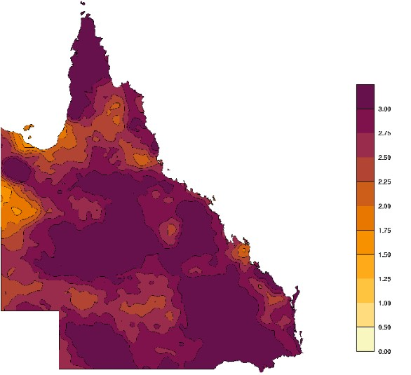
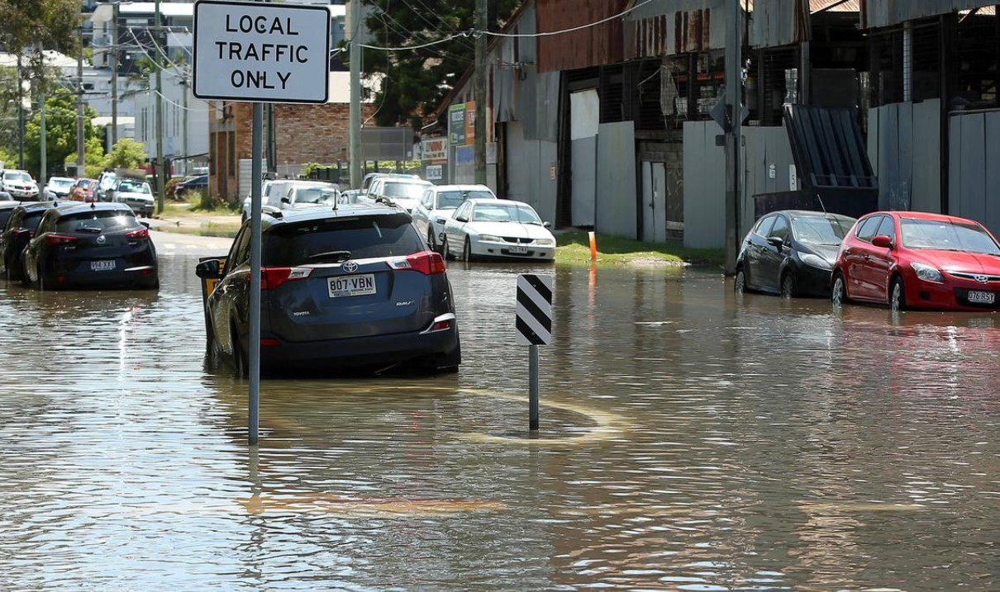
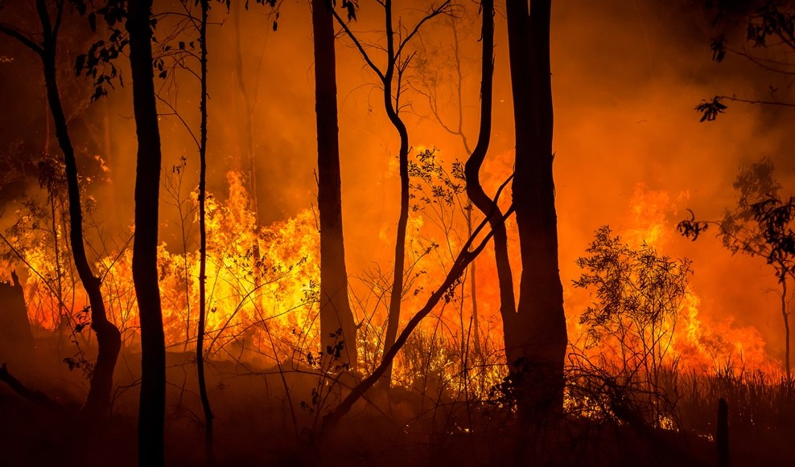

Rising Temperatures and Urban Heat
Brisbane has experienced a noticeable increase in average temperatures over recent decades, consistent with national climate trends. Urban heat island effects—where concrete, roads, and buildings trap heat—are intensifying the impact of global warming in the city.
Suburbs with low tree cover are particularly vulnerable, facing more frequent and prolonged heatwaves. This rise in temperature places additional stress on vulnerable populations, increases energy consumption for cooling, and heightens the risk of heat-related illnesses.
Coastal Flooding and Sea Level Rise
With Brisbane’s proximity to Moreton Bay and the Brisbane River, the city is increasingly vulnerable to coastal and tidal flooding due to rising sea levels. Since 1880, global sea levels have risen by about 20 centimetres, and continued ice melt could accelerate this trend.
Low-lying areas such as Wynnum, Sandgate, and parts of the Brisbane CBD are at greater risk during storm surges or king tides. This not only threatens residential properties but also puts infrastructure and essential services at risk, prompting a need for resilient planning and adaptive coastal defences.
Watch this short animation to find out how the climate and biodiversity crisis interact. Nature, and the biodiversity that underpins it, sustains economies, livelihoods and well-being. The link between nature, climate and the wider services that we rely on as a society has never been more important, but they are not always well understood. This animation explains these links in a clear and impactful way.
The government recognises that a world class evidence base with a view to the future will be needed to respond to the challenges set out in the Dasgupta review, and on 17 June 2021 Defra launched its Natural Capital and Ecosystem Assessment (NCEA) programme to transform our understanding of the state of, and changes in, our natural assets so we can more readily value the natural environment in decision-making.
Bushfires and Smoke Hazards in Brisbane
Bushfires are becoming an increasingly pressing concern for Brisbane as climate change intensifies heatwaves, reduces rainfall, and extends the fire season across South East Queensland. The outer suburbs of Brisbane—particularly those near bushland such as Mount Coot-tha, The Gap, and Samford Valley—are especially vulnerable. Warmer temperatures and dry vegetation have led to more frequent high-risk fire weather days, placing homes, infrastructure, and wildlife corridors at greater risk. Even areas not directly bordering forests are feeling the impact through heightened community alerts, controlled burn-offs, and the mobilisation of firefighting resources closer to residential zones.
Beyond immediate fire damage, smoke generated by bushfires has emerged as a significant health hazard for Brisbane’s urban population. Thick smoke can settle across the city, reducing visibility and contributing to poor air quality for days or even weeks. Vulnerable groups such as children, the elderly, and individuals with asthma or cardiovascular conditions face heightened health risks during these events. In recent years, air quality index readings in Brisbane have surpassed hazardous levels during bushfire outbreaks, leading to school warnings, event cancellations, and growing public concern about long-term exposure.